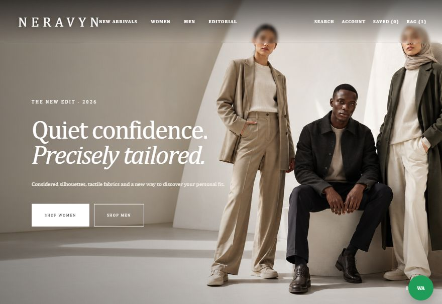
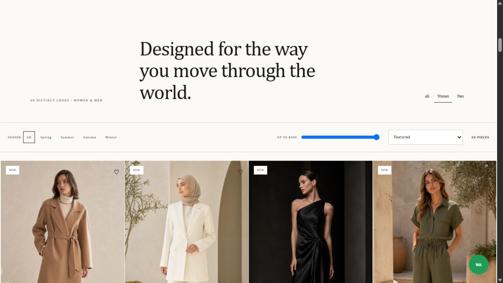

01
Browse the collection
Filter by category, season, and price, or change the sort order to find a look.
03 / Fashion showcase
Forty looks in an interactive fashion catalog.
NERAVYN pairs editorial fashion photography with a catalog for exploring contemporary collections.
Open NERAVYN
The homepage introduces the collection through campaign photography. The catalog lets visitors narrow down 40 looks and try the product and bag experience.
01
Filter by category, season, and price, or change the sort order to find a look.
02
Open a product to see its details and sizes, save it to the wishlist, or add it to the demo bag. Checkout is disabled in the GitHub Pages version.
